PCで大人気の農場ゲーム「BIG FARM」が
モバイルアプリで楽しめるようになりました！
ブラウザ版での基本的な操作はそのままに、
少しコンパクトな仕様でお楽しみいただけます。
(仕様変更の詳しい内容は こちら>>)
普段持ち歩いているスマホやタブレットで
あなただけの農場を育てていきましょう！
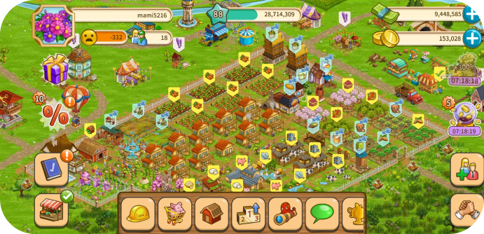
農場経営の基本的な流れ
ここで紹介する基本の生産ライン以外にも、レベルに応じてさまざまな建物が使えるようになっていきます。
あなた独自の生産ラインを極め、農場を繁栄させていってください！
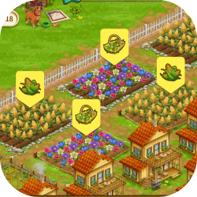
動物たちのエサの原料となる
作物を畑で育てます。
育てた作物はそのまま市場などへ
出荷することもできます。
→
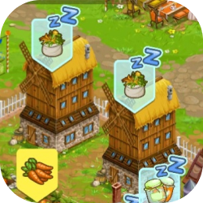
収穫した作物を風車小屋で
動物たちのエサに加工します。
作物を多く貯蔵していれば、
一度に作るエサの量も増えます。
→
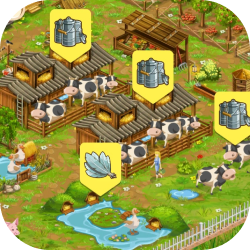
動物たちにエサを与えると
売り物となる生産物や
果樹園で使う肥料の元である
動物のフンを入手できます。
→
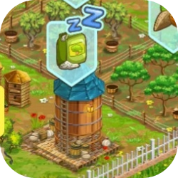
入手した動物のフンを
サイロで肥料に加工すると
果樹園で使えるようになります。
→
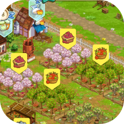
肥料を撒いてたくさんの
果物を収穫しましょう！
畑の生産量を増やす
腐葉土の元となる落ち葉も
入手できます。
→
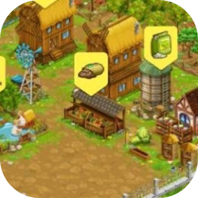
果樹園で取れた落ち葉を
コンポスターで腐葉土に
加工します。
できた腐葉土を畑に撒けば
収穫量がアップ！
特徴
BIG FARMが本格農場シミュレーションと言われる理由は、生産の流れだけではありません。より現実的な農場経営を実感していただけるよう、いくつかの特徴が兼ね備えられています。
BIG FARMを本格シミュレーションたらしめる理由はこちら↓↓↓
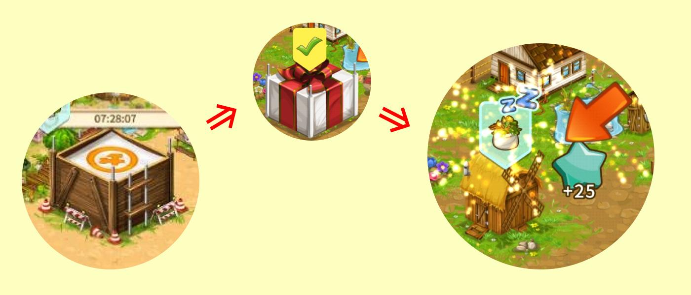
時間
ゲームを進めるにあたって、あらゆる工程には現実の時間経過が必要となります。短ければ数秒、長ければ数時間～丸一日以上かかる工程も出てきます(プレイヤーレベルアップ時や課金で入手できるゴールドを使用することで、待ち時間をなくすこともできます。)
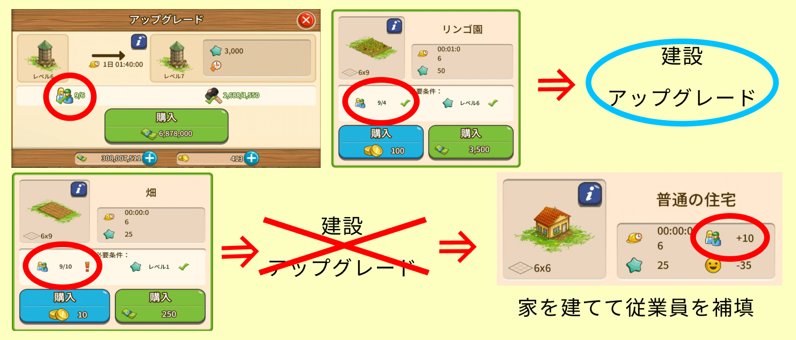
従業員
農場経営には、当然そこで働く従業員が必須です。畑や動物小屋を増やしたり、アップグレードで生産効率を上げるには、家を建てて従業員数を増やさなければなりません。画面に表示されている人数が、建物の建設やアップグレードするために必要な人数を満たしていなければ、作業を進めることができなくなります。
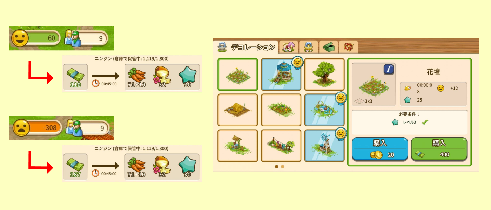
満足度
生産ラインを充実させるためには、ただただ従業員を増やせば（家を多く建てれば）良いというわけでもありません。BIG FARM内には満足度パラメータがあり、従業員の満足度が高ければ生産費用を抑えることができます。満足度を高めるには、従業員の憩いの場（デコレーション）を建設してあげましょう。
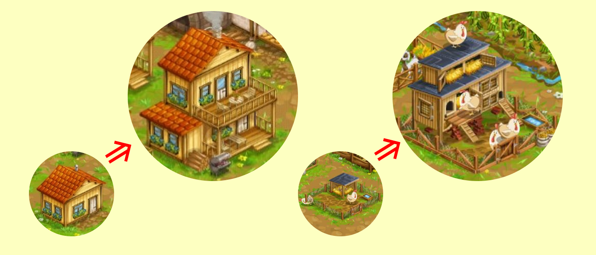
アップグレード
従業員が住む家や母屋、畑や動物小屋などの生産ライン、満足度に関係するデコレーションなどは、効率よい生産につなげるため数段階に分けてアップグレードできるようになっています。アップグレードには、お金だけでなく、改良するための材料を市場やイベントなどで集めないといけないのも、現実味があって難しくも楽しめる特徴です。
↓↓↓ 他にも楽しい要素が盛りだくさん！ ↓↓↓
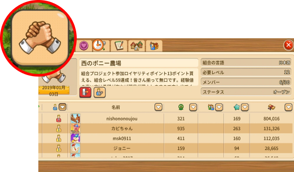
世界中のファーマーと繋がれる組合に参加すると、組合でのみもらえるポイントでアイテム交換やアップグレードできるものも...
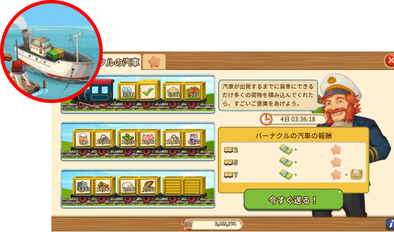
貨物列車の荷台をいっぱいにするとたくさんのお金とアイテムがもらえたり..
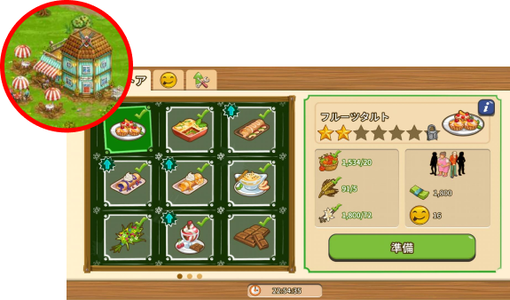
カフェ＆ストアで注文に答えて、ちょっぴりレアなアイテムを手に入れたり...
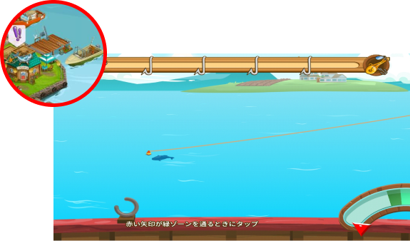
魚を釣ってフライにすれば、その魚のレア度によってはレアアイテムと交換できたり...
ただ生産ラインを極めるだけの経営とは一味違う、さまざまなコンテンツがあなたを待っています。
さあ、今すぐあなただけの広大で豊かな農場を作りましょう！
↓↓↓ ダウンロードはこちら！ ↓↓↓
© 2022 BIG FARM All Rights Reserved.